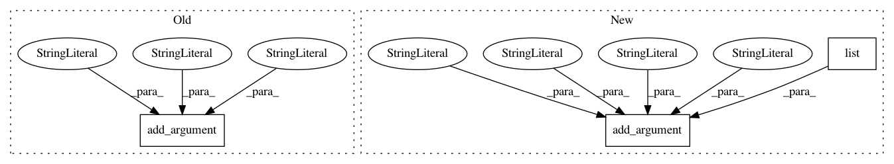

d2040ace48ee0795af21e5176a8e5b443bf68116,niftynet/utilities/user_parameters_default.py,,add_network_args,#Any#,246
Before Change
type=int,
default=2)
parser.add_argument(
"--allow_smaller_final_batch",
metavar="",
help="If True, allow the final batch to be smaller "
"if there are insufficient items left in the queue, "
"and the batch size will be undetermined during "
"graph construction.",
type=str2boolean,
default=-1)
parser.add_argument(
"--decay",
help="[Training only] Set weight decay",
After Change
type=int,
default=2)
parser.add_argument(
"--smaller_final_batch_mode",
metavar="TYPE_STR",
help="If True, allow the final batch to be smaller "
"if there are insufficient items left in the queue, "
"and the batch size will be undetermined during "
"graph construction.",
choices=list(SMALLER_FINAL_BATCH_MODE),
default="pad")
parser.add_argument(
"--decay",
help="[Training only] Set weight decay",
In pattern: SUPERPATTERN
Frequency: 4
Non-data size: 3
Instances
Project Name: NifTK/NiftyNet
Commit Name: d2040ace48ee0795af21e5176a8e5b443bf68116
Time: 2018-08-07
Author: wenqi.li@ucl.ac.uk
File Name: niftynet/utilities/user_parameters_default.py
Class Name:
Method Name: add_network_args
Project Name: NifTK/NiftyNet
Commit Name: a40a1303eaeda6494a1933754c4581be16855196
Time: 2018-08-07
Author: wenqi.li@ucl.ac.uk
File Name: niftynet/utilities/user_parameters_default.py
Class Name:
Method Name: add_network_args
Project Name: NifTK/NiftyNet
Commit Name: ffa271e34384438030753e46e20322ea8dc489a4
Time: 2017-08-23
Author: wenqi.li@ucl.ac.uk
File Name: niftynet/utilities/user_parameters_default.py
Class Name:
Method Name: add_network_args
Project Name: scipy/scipy
Commit Name: 9fcb5a8ef300cc14c54e9f2633142f7b5e2ca53f
Time: 2015-07-05
Author: pav@iki.fi
File Name: tools/refguide_check.py
Class Name:
Method Name: main